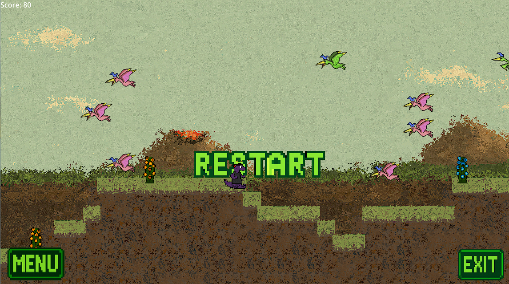

Survive as long as you can. Avoid pterosaurs and plants to stay alive!
While running: Use D and A to move forward and backward.
While flying: Hold Spacebar to activate the jet pack. Use W, S, A, D to control movement.
This project began during the first two months of my undergraduate studies in Data Science at the Universidade Virtual do Estado de São Paulo (UNIVESP). It started as a class activity, where I remixed a Scratch project: https://scratch.mit.edu/projects/1207337213. Inspired by this experience, I challenged myself to fully rebuild the concept in Godot Engine 4.0 within three weeks, completing it before the end of the course. During development, I used generative AI tools such as ChatGPT and DeepSeek to assist me with coding, while creating custom sprites for characters, objects, buttons, and other assets with LibreSprite, supplemented by AI-generated content.
Game by João Victor Basolli Borsatto
Engine: Godot Engine 4.4
Assistance: ChatGPT, DeepSeek
Sprites & Backgrounds: João Victor Basolli Borsatto using LibreSprite and AI-generated images